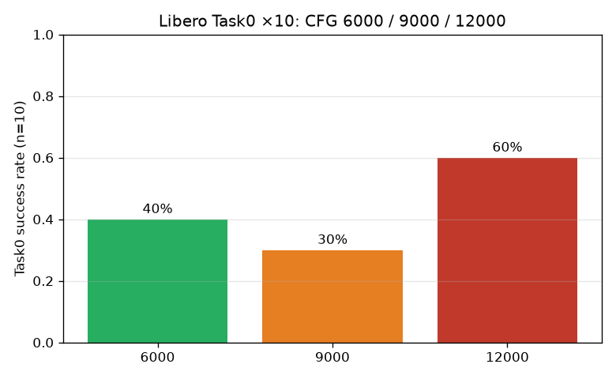
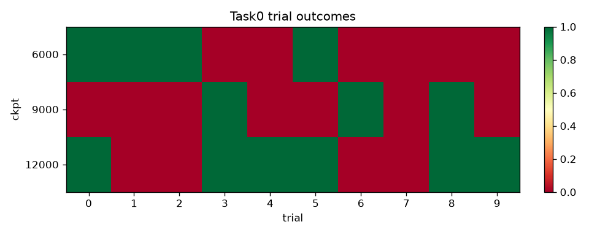
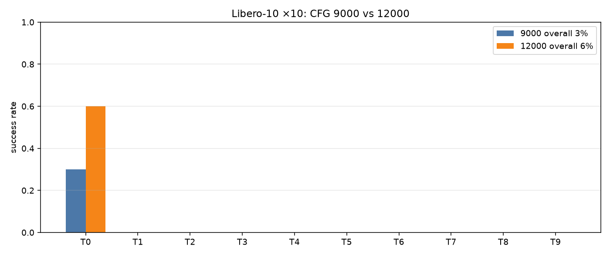
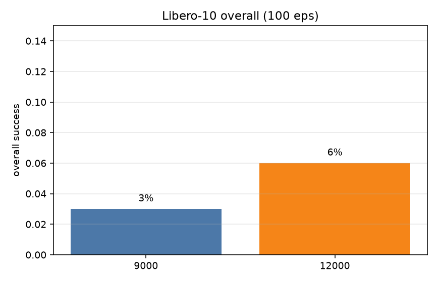
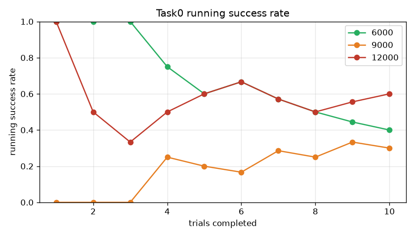
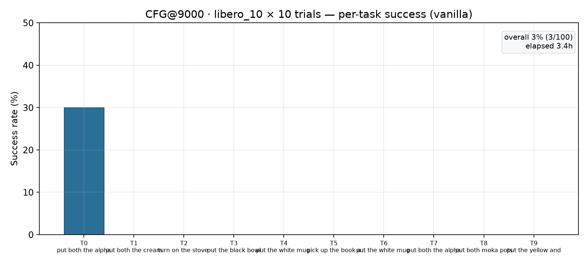
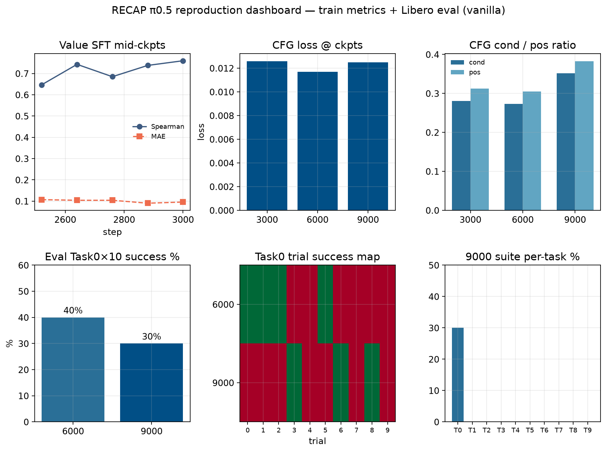

09_task0_doc_vs_cfg30000.png

Vanilla π0.5 forward (no CFG guidance). Source: summary.json under libero_eval_cfg*.
Task0×10: 6000 = 40%, 9000 = 30%, 12000 = 60%. Libero-10 overall: 9000 = 3%, 12000 = 6%.






